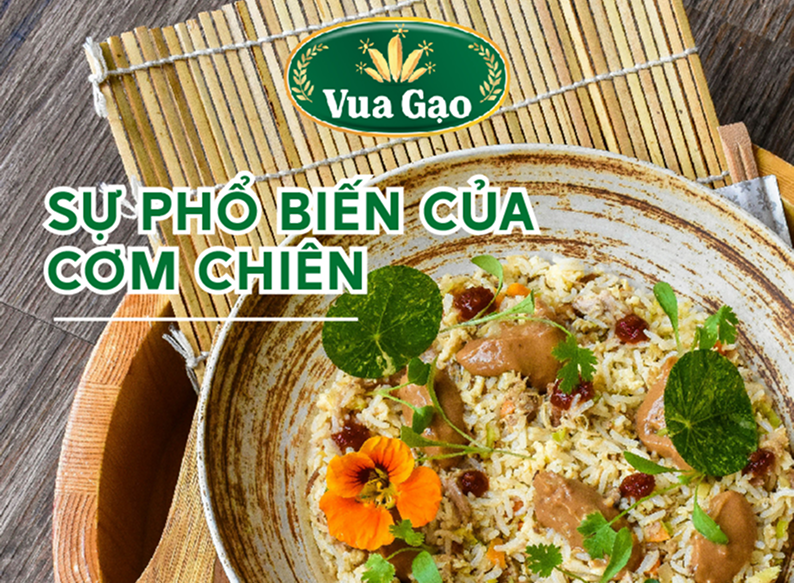
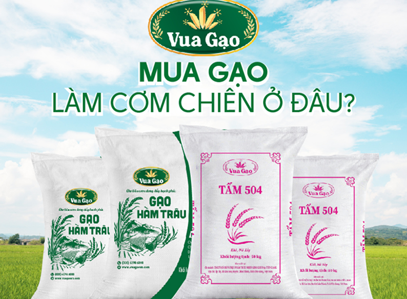

CÁCH LÀM CƠM CHIÊN THẬP CẨM TRỌN VỊ
2024-09-30 13:59:38Cơm chiên thập cẩm là món ăn quen thuộc, nhưng luôn giữ được sức hấp dẫn đặc biệt với nhiều người. Không chỉ bởi hương vị thơm ngon, đầy đủ dinh dưỡng, mà còn nhờ vào sự đơn giản trong cách chế biến, khiến nó trở thành lựa chọn lý tưởng cho bữa ăn hàng ngày.
1. Cơm Chiên Thập Cẩm Là Gì?
1.1. Nguồn gốc cơm chiên ?
Cơm chiên, hay còn gọi là cơm rang, có nguồn gốc từ Đông Á và Nam Á, nhưng được phát triển và phổ biến rộng rãi hơn từ thời nhà Tùy ở Trung Quốc. Đây là một món ăn được chế biến bằng cách xào cơm trong chảo nóng, kết hợp với nhiều nguyên liệu khác như trứng, thịt, hải sản và rau củ. Cơm chiên được đưa lên một tầm cao mới và trở nên phổ biến hơn từ thời nhà Tùy ở Trung Quốc, khi món ăn này không chỉ dừng lại ở sự đơn giản mà còn được tinh tế hóa, kết hợp cùng nhiều nguyên liệu phong phú, tạo nên hương vị đa dạng và đậm đà. Từ đó, cơm chiên không chỉ là món ăn hàng ngày mà còn trở thành biểu tượng của ẩm thực phong phú và sáng tạo trong văn hóa ẩm thực.Cơm chiên có thể trở thành một món chính như cơm chiên thập cẩm, cơm chiên hải sản, hoặc đơn giản là món ăn kèm, tạo nên hương vị phong phú và đa dạng trong bữa ăn.
1.2. Cơm Chiên Thập Cẩm Là Gì ?
Cơm chiên thập cẩm một món ăn hấp dẫn, được biến tấu từ cơm chiên truyền thống, đây là món ăn hấp dẫn, được biến tấu từ cơm chiên kết hợp với nhiều nguyên liệu phong phú như trứng, lạp xưởng, đậu que, gia vị,... tạo nên hương vị ngon miệng và cuốn hút hơn.
2. Sự Phổ biến của Cơm Chiên
Trước đây, cơm chiên là một món ăn nổi tiếng khắp châu Á, đặc biệt thu hút thực khách nhờ sự đa dạng và tiện lợi của ẩm thực đường phố. Tuy nhiên, theo thời gian, món ăn này đã vượt qua biên giới và trở thành một lựa chọn yêu thích tại nhiều quốc gia ở châu Âu và châu Mỹ. Tại Trung Quốc, hai loại cơm chiên nổi tiếng nhất là cơm chiên Dương Châu và cơm chiên Phúc Kiến. Ở Nhật Bản, món Chāhan, dù mang hương vị Nhật Bản, lại có nguồn gốc từ các món cơm chiên của Trung Quốc, trong khi Bokkeum-bap của Hàn Quốc cũng chịu ảnh hưởng từ Chāhan. Ở Đông Nam Á, các phiên bản tương tự như nasi goreng của Indonesia, Malaysia và Singapore, hay Khao Phat của Thái Lan, đều trở thành những món ăn phổ biến trong văn hóa ẩm thực khu vực. Tại phương Tây, nhiều nhà hàng, đã sáng tạo ra phiên bản cơm chiên riêng của mình, bao gồm cơm chiên trứng. Cơm chiên còn xuất hiện trên thực đơn của các nhà hàng Mỹ.Không chỉ dừng lại ở đó, nhiều quốc gia Mỹ Latinh cũng đã biến tấu cơm chiên theo phong cách riêng, như Chaulafan của Ecuador, Arroz Chaufa của Peru, arroz frito của Cuba, và Arroz Mamposteao của Puerto Rico, điều này cũng khẳng định được vị thế của món ăn Châu Á trên bản đồ ẩm thực quốc tế.
3. Cách Nấu Cơm Chiên Ngon
3.1. Bí quyết chiên cơm mềm tơi hạt

Để có món cơm chiên ngon, không bị nhão mà từng hạt vẫn tơi xốp, việc lựa chọn loại gạo phù hợp là rất quan trọng. Vua Gạo gợi ý cho bạn sử dụng Gạo Hàm Châu hoặc Gạo 504 – đây là hai loại gạo có độ dẻo vừa phải, không quá khô, giúp cơm sau khi chiên không bị dính hay mềm nhũn. Một lưu ý quan trọng khi vo gạo trước khi nấu là vo kỹ một chút để loại bỏ bụi bẩn, giúp hạt cơm không dính vào nhau. Tuy nhiên, bạn không nên vo quá nhiều lần vì có thể làm mất đi những dưỡng chất quý giá trong gạo. Nhờ vậy, cơm sẽ giữ được độ tơi ngon và không bị nhão khi chiên
4.1. Chuẩn bị nguyên liệu:
Để chế biến món cơm chiên thập cẩm bạn cần chuẩn bị các nguyên liệu sau:
- Cơm: đây được xem là thành phần chính của món ăn này, bạn có thể tham khảo về gạo 504, hay gạo hàm trâu của Vua Gạo, đây được xem là gạo thích hợp để làm cơm chiên nhất.
- Lạp xưởng tươi hoặc khô: 100g
- Trứng gà ta: 6 quả (có thể sử dụng 3 quả trứng vịt để thay thế)
- Đậu que: 200gr
- Cà rốt: 1/2 củ
- Tỏi: 3 tép
- Gia vị: nước mắm, nước tương, bột ngọt, dầu ăn, tiêu
4.2. Sơ chế nguyên liệu
Bước 1 Sơ chế các nguyên liệu Đầu tiên, cà rốt bạn gọt vỏ, rửa sạch, cắt hạt lựu. Với đậu que, cắt bỏ đầu, tước xơ, rửa sạch và cũng cắt hạt lựu nhỏ vừa ăn. Tỏi thì lột vỏ băm nhỏ. Với lạp xưởng bạn rửa sạch, luộc sơ và cắt hạt lựu. Bước 2 Đánh trứng Trứng bạn đập vào tô sau đó cho mêm 1 muỗng cà phê nước mắm, 1 muỗng cà phê tiêu xay vào. Sau đó dùng đũa đánh đều tay cho lòng đỏ và trắng tan ra hòa vào nhau. Bước 3 Xào các nguyên liệu rau củ Bắt chảo lên bếp, bạn cho 1 muỗng canh dầu ăn vào chảo. Đợi đến khi dầu nóng bạn cho tỏi băm vào và phi đến khi tỏi vàng thơm. Tiếp theo, bạn cho lần lượt cà rốt, đậu que, lạp xưởng đã cắt hạt lựu vào. Đảo đều tất cả các nguyên liệu khoảng 3 phút đến 5 phút đến khi các nguyên liệu vừa chín tới. Cho tất cả nguyên liệu ra dĩa đợi chiên chung với cơm. Bước 4 Chiên cơm Dùng chảo xào nguyên liệu cho thêm 2 muỗng dầu ăn, đợi dầu nóng tiếp tục phi thơm tỏi. Sau khi tỏi vàng bạn hãy cho cơm vào chiên đều từ 2 đến 3 phút. Dùng sạn tơi nhuyễn cơm ra sau đó cho trứng đã đánh tan vào đảo đều. Trộn đều đến khi thấy trứng đã bám đều vào cơm. Sau đó bạn nêm các gia vị sau: 2 muỗng cà phê bột ngọt, 1 muỗng cà phê tiêu, 3 muỗng canh nước tương vào chảo. Bạn tiếp tục dùng sỏi trộn thật đều tay với lửa vừa khoảng 5 phút cho đến khi cơm bông tơi, tách hạt thì bạn nêm nếm lại gia vị và tắt bếp. Bạn có thể tìm hiểu thêm về Gạo Lứt Tam Sắc
5. Mua Gạo Làm Cơm Chiên Ở Đâu ?
Tùy theo khẩu vị và nhu cầu, người tiêu dùng có thể lựa chọn nhiều loại gạo khác nhau để chuẩn bị bữa ăn cho gia đình. Chẳng hạn, gạo 504 và Hàm Trâu thường được sử dụng cho các món cơm chiên với số lượng lớn, trong khi các loại gạo cao cấp như ST25, ST24 lại thích hợp cho bữa ăn hàng ngày nhờ hương vị thơm ngon và chất lượng vượt trội. Những loại gạo này rất dễ dàng tìm thấy tại các cửa hàng hoặc có thể đặt mua trực tuyến, mang lại sự tiện lợi và đa dạng cho người tiêu dùng. Tuy nhiên để mua được gạo chất lượng, đảm bảo an toàn bạn cần lựa chọn nguồn gạo uy tín, chất lượng. Là doanh nghiệp chuyên sản xuất gạo trong và ngoài nước theo dây chuyền khép kín hiện đại, Vua Gạo tự tin là nguồn gạo sạch, uy tín hiện nay. Sản phẩm khi cung cấp ra thị trường đã được kiểm duyệt an toàn vệ sinh thực phẩm. Tất cả các giai đoạn trong quy trình sản xuất từ gieo trồng đến khi tạo ra sản phẩm đều đảm bảo tuân thủ nghiêm ngặt theo tiêu chuẩn quốc tế như ISO 22000, HACCP, BRC và GMP. Hiện nay, các sản phẩm Gạo của Vua Gạo đang được bày bán độc quyền tại các siêu thị,cửa hàng bách hóa và trang thương mại điện tử như : Shoppe, Lazada, Tiktok mang đến sự tiện lợi trong mua sắm và đảm bảo an toàn vệ sinh thực phẩm với tiêu chí 3 KHÔNG: KHÔNG CHẤT BẢO QUẢN KHÔNG CHẤT TẠO MÙI KHÔNG CHẤT TẨY TRẮNG Ngoài ra, Vua Gạo cũng nhận gia công sản xuất gạo Gạo Thơm Lài với số lượng lớn theo yêu cầu của khách hàng về quy cách, chất lượng,...
Vua Gạo Marketer
Công ty cổ phần mầm gạo
283/12/10 đường Linh Đông, P Linh Đông, Tp Thủ Đức, Tp HCM, Việt Nam.
Ấp An Thạnh, Xã Hòa An,Huyện Chợ Mới, Tỉnh An Giang, Việt Nam
0939 316 039
info@mamgao.com
Sản phẩm mới nhất
tin tức bạn đã xem

Giá gạo Việt Nam tiếp tục tăng cao
Trong những tháng gần đây, giá gạo xuất khẩu của Việt Nam đang....
Giá gạo Việt Nam tiếp tục tăng cao
Trong những tháng gần đây, giá gạo xuất khẩu của Việt Nam đang....
Giá gạo Việt Nam tiếp tục tăng cao
Trong những tháng gần đây, giá gạo xuất khẩu của Việt Nam đang....
Giá gạo Việt Nam tiếp tục tăng cao
Trong những tháng gần đây, giá gạo xuất khẩu của Việt Nam đang....